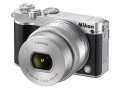
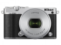
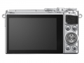
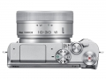
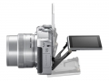
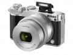
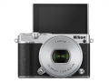
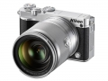

器材库 > APS及其以下画幅可换镜头数码相机 > J5

规格总览
产品类型
CX画幅可换镜头数码相机
发布日期
2015-04-02
厂家推荐价格
51,000.00 （日元）
影像规格
影像传感器
CMOS
影像传感器尺寸
约13.2mm x 8.8mm
总像素
约2301万万
有效像素
约2081万万
影像处理器
EXPEED 5A
最大解像度
5568×3712
静态图像格式
JPEG, NEF(RAW), NEF(RAW)+JPEG
短片尺寸
1920 x 1080/60p（59.94幅/秒）3840 x 2160/15p （14.99幅/秒）1280 x 720/120幅/秒
镜头和对焦
镜头卡口
Nikon 1
兼容镜头
尼康1
对焦点
单点AF：171点对焦区域；中央105点对焦区域支持相位侦测AF 自动区域AF：41点对焦区域
对焦模式
复合自动对焦（相位侦测AF/ 对比侦测AF）
AF辅助灯
有
手动对焦
支持
曝光控制
测光系统
使用影像传感器的TTL测光
快门类型
电子快门
快门速度
/16,000-30秒（以1/3EV 为步长进行微调）、B门 ，注意：在大约2 分钟后B 门将自动结束
闪光同步速度
1/60秒
ISO感光度
160, 12800
连拍
20张/秒
闪光灯
内置闪光灯
弹出式
闪光指数
5
取景器/显示屏
景深预视
有
LCD类型
TFT LCD
LCD像素
103万
视野率
100%
LCD特性
触摸屏, 翻转屏
Live View
有
文件输入/输出
存储卡
microSD, microSDHC, microSDXC
数据接口
高速USB
无线功能
Wi-Fi, NFC
电源
电池
一块EN-EL24 锂离子可充电电池
机身规格
颜色
黑色, 白色, 灰色
尺寸
约98.3×59.7×31.5mm （不包括突起部分）mm
重量
约265g（带电池和存储卡，但不包括机身盖）；约231g（仅照相机机身）g
该产品暂无存档的网友点评
产品图 / 样片







评测 / 相关文章
- 详细内容 （存档）
- 小有所倚 尼康4K无反J5评测 （存档）
- ［试用］尼康J5实拍样片 （存档）
- ［资讯］尼康Nikon 1 J5官方样片欣赏 （存档）
相关文章
- ［试用］尼康J5实拍样片 （存档）
- ［试用］小有所倚 尼康4K无反J5评测 （存档）
- ［资讯］尼康Nikon 1 J5官方样片欣赏 （存档）
- ［资讯］尼康发布可换镜数码相机Nikon 1 J5 （存档）